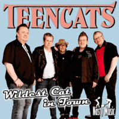

Teencats - Wildest Cat In Town (Single, 2017)
01 - Wildest Cat In Town (1:52)
02 - The Speed Of The Sound O Loneliness (3:40)
© Nasty Music :: [NASTY-86]
Notes
Norway.
reference information: Digital release
Review
052/366 (Project 366)
Teddy Boy Rock'N'Roll band made a comeback after a while. "Wildest Cat In Town" single is a real taste of rockin' and rollin' rockabilly. Teencats revival as is!
My experience is based on Digital release [NASTY-86, 2017]. Thanks to Nasty Music for the ability to buy it via all these modern digital channels. And, as a result, hear this tune!
First track "Wildest Cat In Town" is a wild twister! So feral, so torn as a whirlwind, so entertaining. Rock'N'Roll!? Yeah! The song grabs attention, then pulls into a rhythm. And leaves in a very exalted sensation. That is a pretty stunt! Actually this is a cover version of Crazy Cavan song. Not so (neo) how it was with Crazy Cavan and the Rhythm Rockers though. The second track "The Speed Of The Sound O Loneliness" is more lyrically convivial. A fairly good turning to a relatively tender sound after a lush shake-up. Whereas still full of rockin' and even with rockabilly tints - song sounds with a pretty pensive mood. This is largely due to the theme of the track. Original version of "Speed of the Sound of Loneliness" by John Prine was an even more smokier ballad, with a much more expressed country rhythm and with the attractiveness of dulcet folk sound. However, the interpretation from Teencats is pretty sweet.
Heartfelt manner of singer adds a special temper to the sound of songs. Teencats are matured band and a charismatic voice is a logical perk. Since this single is a kind of comeback showcase - these songs are a fit choice! Both are quite powerful in their own way. The first is fast and without compromise. The second is melodic and subtle. Such a pair always sounded firmly.
Perhaps tracks are fully inspired by Teddy Boy rockers bunch. These are really the very Teencats. Although not so full of youthful enthusiasm and a little less carelessness in the sound, but still there is a spicy drive. In this way art with a tempered tone has turned out.